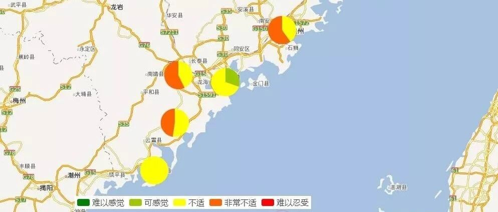

地震了，我好害怕，是我太敏感了么？ | 1126台湾海峡6.2级地震加速度人员感受分析
致谢和声明：
感谢中国地震台网中心为本研究提供数据支持。
加速度对人员感受的分析
11月26日台湾海峡地震，我国多个地区的民众反映震感强烈。但是我们课题组发的破坏力分析报告认为这次地震不会引起什么破坏（详见：20181126台湾海峡6.2级地震破坏力分析）。那到底是不是民众反应过度？我们进一步做了一些分析。

人对地震一个很重要的感受就是地震引起的加速度。地面运动加速度作用到建筑后，还会被建筑放大，因此一般来说，楼层越高，感觉到的晃动也就越大。加速度达到一定程度，人就会感到难受甚至恐慌（海盗船、过山车、跳楼机，游乐园里面的各种设备就是通过制造加速度来制造刺激，赚取小钱钱的）。我们此前多次提到，我们开展区域震害分析的“城市抗震弹塑性分析”方法，一个突出的特点就是可以提供完整的工程需求参数（EDP）信息，不仅包括结构损伤判断必不可少的层间位移角信息，还包括了结构的残余位移信息，当然，也包括了不同建筑的楼面加速度信息。例如，图1给出了一栋3层钢筋混凝土框架结构在本次台湾海峡地震ZZZS台站处地震动(EW方向)作用下的楼层加速度响应结果。在2016年山西清徐地震时，我们就用城市抗震弹塑性分析方法探讨了太原示范区的人员感受（详见"1218"山西清徐4.3级地震太原示范区建筑振动模拟）

图1 3层框架结构加速度响应
因此，我们就可以进一步利用各个台站的记录，以及城市抗震弹塑性分析给出结果，得到不同地区人员感受到的加速度（这里已经考虑了建筑引起的加速度放大效应），进而给出人群的感受比率，如图2所示。其中，人员感受与加速度的对应关系如表1所示（董安正, 赵国藩. 高层建筑结构舒适度可靠性分析[J]. 大连理工大学学报, 2002, 42(4):472-476）。
表1 加速度与人员感受对应关系


从图2可以清晰看出，虽然本次地震不会引起什么破坏，但是地面加速度造成的人员不适的比例较高。在泉州、漳州等地，感到“非常不适”的比例可以超过50%。所以当地民众感觉震感强烈是完全合情合理的。本案例也进一步说明了城市抗震弹塑性分析的优点。
小结
城市抗震弹塑性分析基于结构动力学和地震工程的基本原理，不仅可以给出常规的震损评价结果，还可以进一步给出残余位移（修复难度），楼面加速度（人员感受）等多种多样的震害后果，其潜力还有很大的发掘空间。因此，欢迎大家一起来研究、推广城市抗震弹塑性分析方法。
点击“阅读原文”可以查看网页版加速度人员感受分布图。

本文作者：程庆乐
相关研究
长按识别二维码，关注我们的科研动态